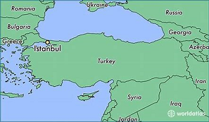

Istanbul, historically known as Byzantium and Constantinople, is the most populous city in Turkey and the country's economic, cultural and historic center. Istanbul is a transcontinental city in Eurasia, straddling the Bosporus strait (which separates Europe and Asia) between the Sea of Marmara and the Black Sea. Its commercial and historical center lies on the European side and about a third of its population lives on the Asian side. With a total population of around 15 million residents, Istanbul is one of the world's most populous cities, ranking as the world's fourth-largest city proper and the largest European city. The city is the administrative center of the Istanbul Metropolitan Municipality. Istanbul is viewed as a bridge between the East and West.
Founded under the name of Byzantion on the Sarayburnu promontory around 660 BCE, the city grew in size and influence, becoming one of the most important cities in history. After its reestablishment as Constantinople in 330 CE, it served as an imperial capital for almost 16 centuries, during the Roman Byzantine, Latin, Palaiologos Byzantine and Ottoman empires. It was instrumental in the advancement of Christianity during Roman and Byzantine times, before the Ottomans conquered the city in 1453 CE and transformed it into an Islamic stronghold and the seat of the Ottoman Caliphate.
The city's strategic position on the historic Silk Road, rail networks to Europe and the Middle East, and the only sea route between the Black Sea and the Mediterranean have produced a cosmopolitan populace. While Ankara was chosen instead as the new Turkish capital after the Turkish War of Independence, and the city's name was changed to Istanbul, the city has maintained its prominence in geopolitical and cultural affairs. The population of the city has increased tenfold since the 1950s, as migrants from across Anatolia have moved in and city limits have expanded to accommodate them. Arts, music, film, and cultural festivals were established towards the end of the 20th century and continue to be hosted by the city today. Infrastructure improvements have produced a complex transportation network in the city.